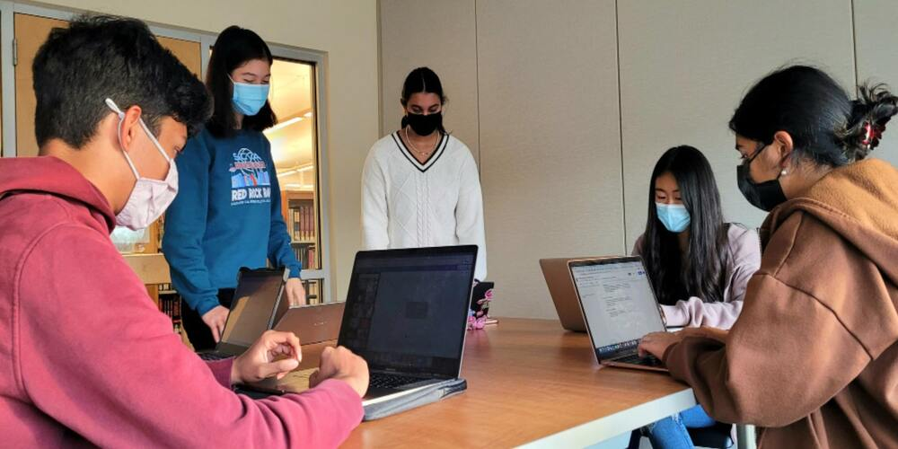
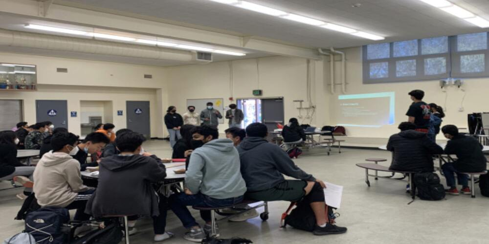
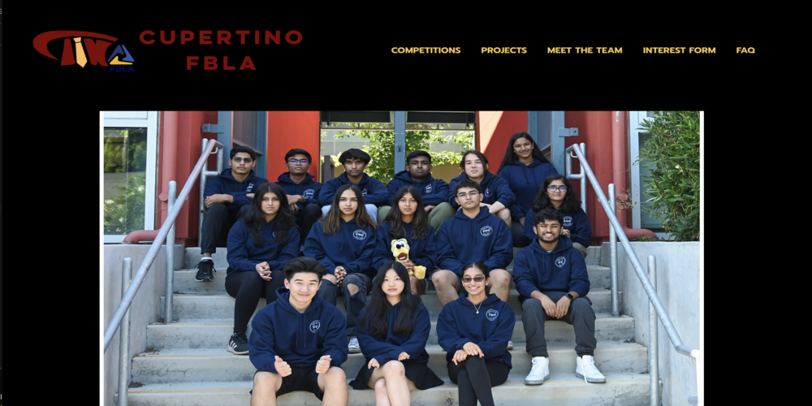
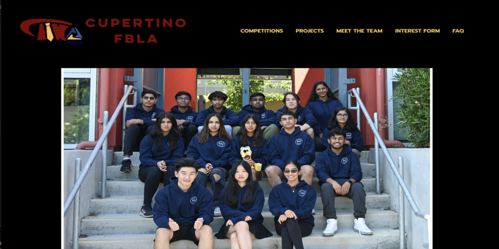
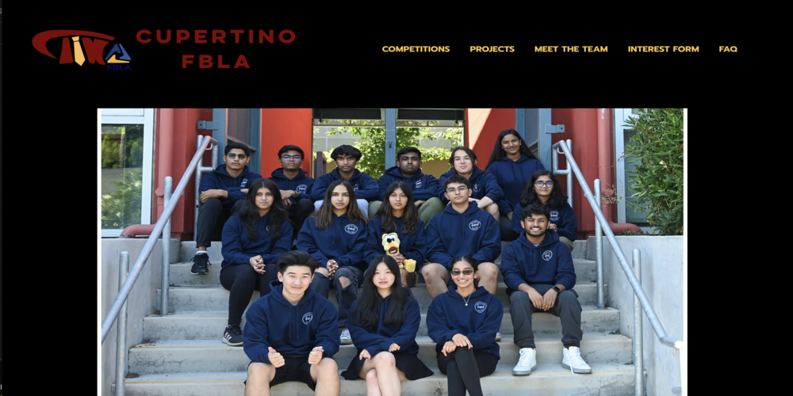

Ellie Yao
Hi, I'm Ellie! I attend the University of California, Riverside (UCR) with a major in Business Administration with a Marketing concentration. I am an aspiring User Experience Designer passionate about problem-solving, creativity, and marketing strategy. Helping users tell their unique stories is what I want to dedicate my career towards.
What fuels my passion in Marketing is being part of the seamless execution of engaging campaigns and the gratification that comes from connecting with the target audience. I find immense reward in crafting compelling narratives and employing innovative strategies to captivate the market. The synergy of data-driven insights and creative ingenuity intrigues me, and I am dedicated to channeling this passion into delivering impactful results for the team.
Given that AI plays a pivotal role in evolving technology, I am interested in learning more about incorporating and refining AI technologies into marketing strategies. I plan to explore and contribute to the integration of cutting- edge technology into marketing initiatives. This aligns with my commitment to staying at the forefront of industry trends and leveraging emerging technologies to enhance marketing effectiveness.
Experience
Intern
• Prepared financial reports and tax returns for 50 small businesses and individual clients by utilizing Quickbooks.
• Conducted data entry, reconciled statements, and organized financial records with accounting software.
• Effectively managed individual client inquiries through email, providing exceptional customer service for requested items.
Public Relations Officer
• Grew member participation by 25% by experimenting with digital promotions of school and community activities.
• Organized four professional development workshops on entrepreneurship, strategic planning, and networking for FBLA members by collaborating with the respective company, representative, or Alumni.
Promotions and Operations Team
• Earned $125+ from fundraisers for nonprofit mental health-centered organizations.
• Increased the user base of a startup mental technology company, Neolth, by 3000+ new people from our team’s outreach.
• Achieved 2nd place in the state competition for providing Neolth with student feedback and supporting mental health awareness in the Bay Area.
• Utilized Adobe applications and Canva to design promotional materials.
Education
University of California Riverside
University of California Riverside
Cupertino High School
Portfolio


 

